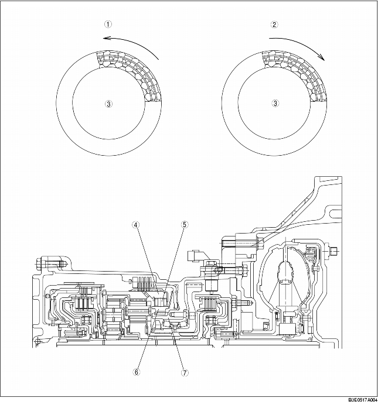

One-way clutch operation
• The one-way clutch outer race (front internal gear) rotates clockwise (seen from the torque converter side) freely, but the sprags rise to lock the rotation when the outer race tries to rotate counterclockwise.
• The one-way clutch locks the counterclockwise rotation of the front internal gear, and also locks the counterclockwise revolution of the rear planetary gear via the rear planetary carrier.

.